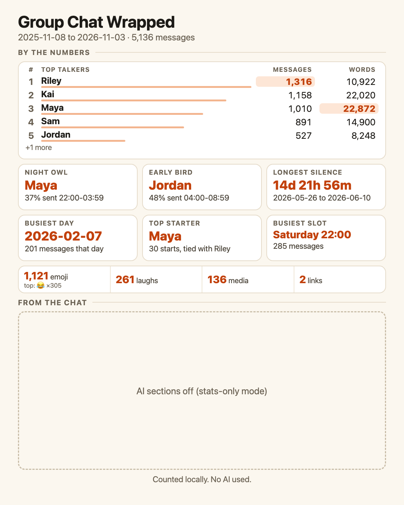
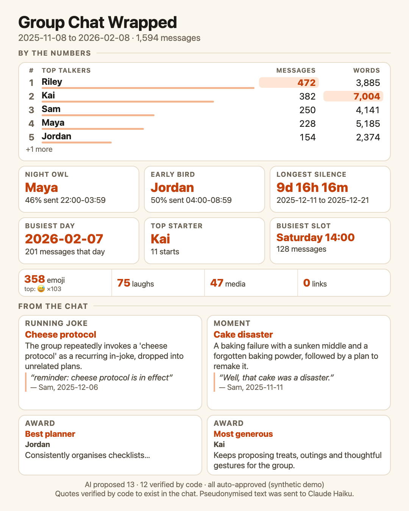

A card for a WhatsApp group chat: counted statistics, and optionally running jokes, moments and awards found by a language model, each backed by a quote that code has checked against the real message. Both cards below come from the bundled synthetic chat; no real chat is shown here.


Pseudonymised text is sent to Anthropic in AI mode; stats-only mode sends nothing. See the methodology page for the measured results, their sample sizes and the limits.
Source: https://github.com/devsutharsystems/group-chat-wrapped